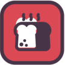

NEED
Food
Hunger: the fastest-falling need and one of three that kill. What restores it and how fast it drains.
All needs · Hydration · Heat · Energy (sleep) · Fun · Cooling · Wellness · Community
The meter
| Starts at | Falls per day | One unit restores | Low warning | Met above | Full at | Highest | Death at |
|---|---|---|---|---|---|---|---|
| 130 | 40 | 60 | 20 | 90 | 110 | 150 | -100 |
With nothing restoring it, a villager lasts about 5.75 days (29 minutes) from the start of a level. One unit restores 60 points against a fall of 40 a day, so about 0.67 units a day keep it level. Stored settings; not yet timed in play.
Items
| Item | Units | Meter points | Also gives | Who |
|---|---|---|---|---|
| Cheese | 3 | 180 | — | everyone |
| Barley Porridge | 2 | 120 | Community 1 at the Porridge Cookhouse | everyone |
 Bread | 2 | 120 | — | everyone |
| Dried Meat | 2 | 120 | — | everyone |
| Fondue | 2 | 120 | — | everyone |
 Cookie Cookie | 1 | 60 | Fun 4 | everyone |
| Fruit | 1 | 60 | — | everyone |
| Gingerbread Man | 1 | 60 | Fun 4 | everyone |
| Manchamanteles | 1 | 60 | Fun 4 at the Desert Cookhouse | everyone |
| Stew | 1 | 60 | Community 4 at the Open Kitchen | everyone |
| Veggie | 1 | 60 | — | everyone |
Switched on in 128 of 130 levels; older maps may not record the setting.
When villagers eat and how hungry they get first is on How eating works.